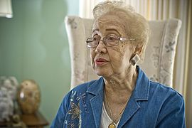

Katherine Johnson
Katherine Coleman Goble Johnson (White Sulphur Springs, 26 de agosto de 1918 – 24 de fevereiro de 2020) foi uma matemática, física e cientista espacial norte-americana.[1] [2]
Ela fez contribuições fundamentais para a aeronáutica e exploração espacial dos Estados Unidos, em especial em aplicações da computação na NASA. Conhecido pela precisão na navegação astronômica informatizada, seu trabalho de liderança técnica na NASA se estendeu por décadas onde ela calculava as trajetórias, janelas de lançamento e caminhos de retorno de emergência para muitos voos de Projeto Mercury, incluindo as primeiras missões da NASA de John Glenn, Alan Shepard, o voo da Apollo 11, em 1969, à Lua e trabalho contínuo por meio do programa dos ônibus espaciais e sobre os planos iniciais para a missão a Marte.[3][4]
Em 2016, foi incluída na lista de cem mulheres mais inspiradoras e influentes pela BBC.[5]
Carreira
Katherine optou pela matemática, com interesse em pesquisa na área, um caminho com muitas portas fechadas para negras na época. Os primeiros empregos que conseguiu eram para lecionar. Em uma reunião de família, um parente mencionou que a NACA, que viria a se tornar a NASA, estava com processo seletivo aberto para mulheres, em especial negras, para seu departamento de navegação. Katherine inscreveu-se em 1953 e foi imediatamente aceita no novo time da NASA.

Vida Pessoal
Katherine foi co-autora de 26 artigos científicos.[13] A NASA mantém uma lista de artigos mais significativos de Johnson com links para sua ferramenta de busca de arquivo para encontrar outros.[16] O impacto de seu legado pioneira para a ciência espacial e computação lhe rendeu diversas honrarias e medalhas, além de servir como modelo para outras estudantes.[23][24][25][26][27][28] Desde 1979, antes de se aposentar da NASA, sua biografia tem lugar de destaque entre a lista de negros pioneiros em ciência e tecnologia.[29][30]